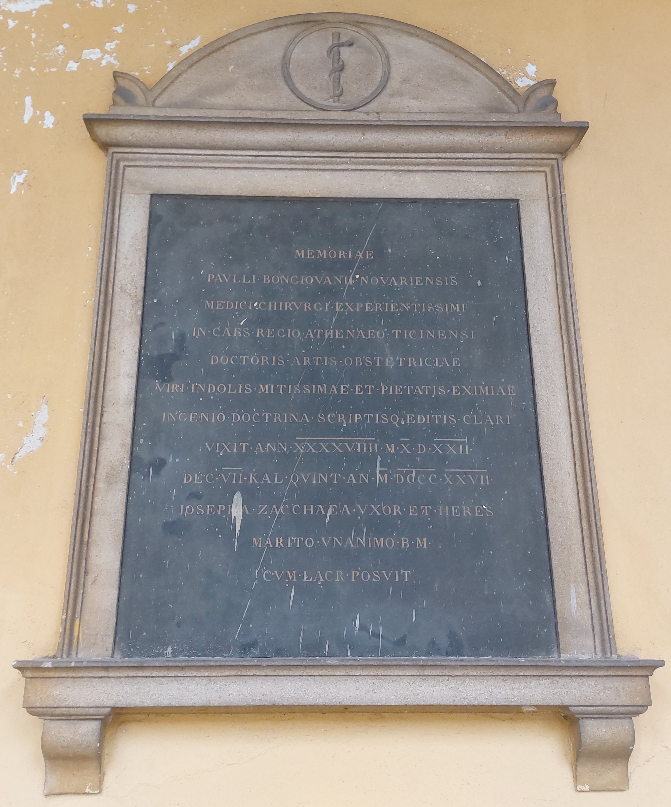

Ruolo: Medico, Chirurgo e Professore di Ostetricia (1777–1827)

"Alla memoria di Paolo Bongiovanni di Novara, medico e chirurgo espertissimo, professore di arte ostetrica nell'Imperiale Regio Ateneo Pavese. Uomo d'indole mitissima e di straordinaria devozione, celebre per ingegno, dottrina e per le opere pubblicate. Visse 49 anni, 10 mesi e 22 giorni. Morì il settimo giorno prima delle Calende di luglio dell'anno 1827. Giuseppa Zacchea, moglie ed erede, pose con lacrime (questa lapide) al marito concorde e benemerito."
"In memory of Paolo Bongiovanni from Novara, most distinguished physician and surgeon, professor of obstetrics at the Imperial Royal University of Pavia. A man of the most gentle character and exceptional devotion, renowned for his intellect, doctrine, and published works. He lived 49 years, 10 months and 22 days. He died on the seventh day before the Kalends of July in 1827. Giuseppa Zacchea, his wife and heir, placed (this headstone) with tears for her devoted and deserving husband."